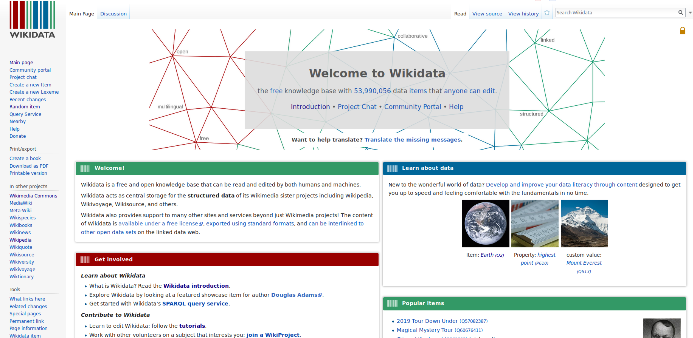

What is Wikidata?
Last updated on 2024-10-21 | Edit this page
Overview
Questions
- What are Items and Statements?
- How does the Wikidata interface look like?
- How is Wikidata linked to other Wiki projects?
Objectives
- Feel comfortable describing Wikidata to colleagues.
- Learn about Wikimedia projects (e.g. Wikipedia, WikiCommons) and Wikidata is related to them.
- Know why linked open data is important in my work as a cataloging or teaching librarian.
- Know able identify components of a Wikidata item page, how Wikidata is organized and how to navigate in it.
What is Wikidata?
Wikidata’s description explains that “Wikidata is a free and open knowledge base that can be read and edited by both humans and machines.” Wikidata functions as the central database for a variety of Wiki projects, including Wikipedia, Wiktionary, and Wikisource, among others.
Most users will be familiar with Wikpedia, which describes itself as “a free encyclopedia, written collaboratively by the people who use it. It is a special type of website designed to make collaboration easy, called a wiki. Many people are constantly improving Wikipedia, making thousands of changes per hour. All of these changes are recorded in article histories and recent changes.”
Wikidata contains various data types (e.g. text, images, quantities, coordinates, geographic shapes, dates). The data can be queried via a query interface called SPARQL, which we will cover later in this lesson. Data is published under the Creative Commons Public Domain 1.0 license. It can be modified, copied, and distributed without permission.
Wikidata also contains authority files, bibliographic data, and other content normally managed in library databases.
Importantly, Wikidata can be interlinked to other open data sets on the linked data web.
Motivation and “Why should I use Wikidata”
Knowledge Integration and Access: Wikidata offers an open and structured way to interlink various identifiers (like ORCID, GND, or VIAF). This is essential for librarians who manage resources and need to ensure that different systems and databases can communicate with each other seamlessly.
Authority Control: Librarians often work with authority files like GND or VIAF to ensure consistent naming conventions. Wikidata helps to map and retrieve these identifiers, making cataloging more efficient.
Real-World Use Cases:
- Scholia: A tool built on top of Wikidata that visualizes scholarly profiles and research outputs, showing the impact of Wikidata in academic and research contexts. Librarians can showcase Scholia as a tangible example of how data in Wikidata is used for research and scholarship.
- Crosswalks between systems: Wikidata’s ability to link various identifiers (e.g., connecting ORCID to GND or VIAF) is beneficial for cross-referencing and data cleaning in library management systems.
- Global and Collaborative Nature: Wikidata is a collaborative platform where librarians can contribute and maintain data, ensuring that their records stay relevant and up to date within a global information network.
1.1 Intro interface
Let’s try this out in the next section of this lesson and see if we as humans can simply read the data on Wikidata:
-
Explore a Wikidata Item page:
- Start by going to the Wikidata Main Page by typing “www.wikidata.org” into your browser. This is what you should see:

Screenshot of Wikidata Main PageNow go to the search bar in the top right corner and enter “british library”. This will give you a list with search results. Click the entry that says: “British Library (Q23308) national library of the United Kingdom”. Now you should see the british library’s item page: https://www.wikidata.org/wiki/Q23308
-
Let us explore the item British Library (Q23308). The top part of the item page serves for identifying the item. It has:
- unique identifier (Q + a number)
- label
- description
- aliases
-
The bottom part is the “statement” section, that adds statements to the item. A statement has:
- property (P + a number)
- value
- qualifier (optional)
- references (optional)
- is a so called triple which will be explained later
- As you can see a property can have multiple values for one property; for example “member of”; can be further specified by qualifiers (not showen on item British Library).
All these new definitions like statements, qualifiers and so on can be confusing. If you are not sure you can check this overview graphic https://upload.wikimedia.org/wikipedia/commons/a/ae/Datamodel_in_Wikidata.svg:

-
Usually pages can be edited by anyone; click the pen on the upper-right; Q23308 - British Library is semi-protected; don’t worry if you made a mistake, you can always go back in history
- “View history” - more later
- “Log in” and other things for registered users
All structured data is under the creative Creative Commons CC0 License: “The person who associated a work with this deed has dedicated the work to the public domain by waiving all of his or her rights to the work worldwide under copyright law, including all related and neighboring rights, to the extent allowed by law. You can copy, modify, distribute and perform the work, even for commercial purposes, all without asking permission.” from https://creativecommons.org/publicdomain/zero/1.0/
-
Further Link describing Wikidata in one page (visual)
1.2 Play games to open
- Visit the Wikipedia page of the city you were born in two languages of you choice (you can choose different language version in the left side of a Wikipedia page) and look the size of the population. Are the numbers the same in the different language? Visit the item in Wikidata.
1.3 Wikidata Item Eastereggs
1.4 Linking Wikidata to other Wiki resources
- Link from Wikipedia to Wikidata
- e.g. https://en.wikipedia.org/wiki/On_the_Origin_of_Species
- => Follow the link “Wikidata item” on the left side under “tools”
- => https://www.wikidata.org/wiki/Q20124
- => the Wikipedia article is linked on the Wikidata’s item page. You can find it on the right side.
- => link to WikiCommons and WikiSource
- e.g. https://en.wikipedia.org/wiki/On_the_Origin_of_Species
Key Points
- Item
- Statement